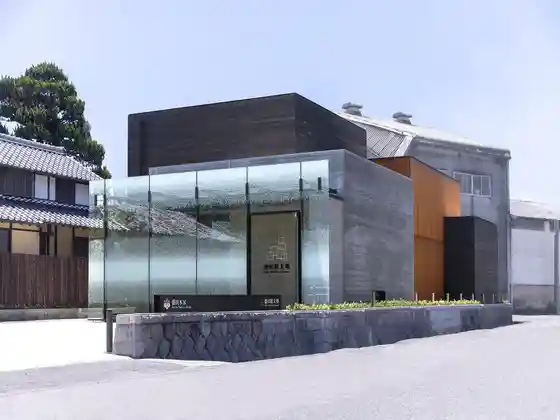
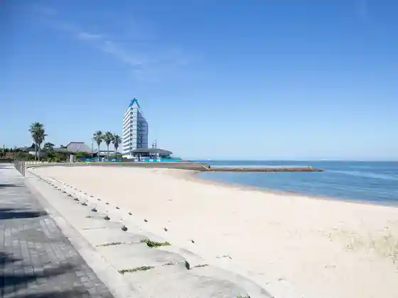
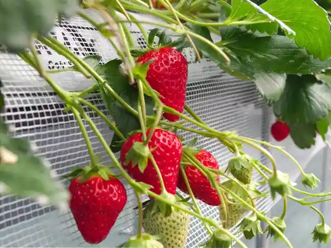
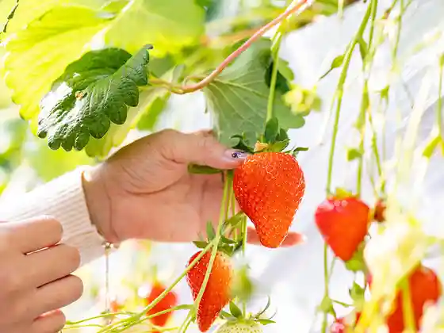

Chubu Kokusai Airport Sentorea
Tokoname, Aichi · 0569-38-1195 · Official / source link
Morita Akio Juku
Tokoname, Aichi · 0569-76-2865 · Official / source link

Ono Coast (Ono Beach)
Tokoname, Aichi · 0569-42-0420 · Official / source link

farm Ichigoro
Tokoname, Aichi · 070-1612-9015 · Official / source link

Ai no Ichigo Farm
Tokoname, Aichi · 090-6585-1781 · Official / source link

Sawada Kitakura / Shiraoi Sawada Shuzo Chokueiten
Tokoname, Aichi · 0569-35-4003 · Official / source link
Rinku Beach
Tokoname, Aichi · 080-2632-7228 · Official / source link
Sakai Onsen
Tokoname, Aichi · 0569-37-0006 · Official / source link
Noborigama Plaza Tenji Kobo Kan
Tokoname, Aichi · 0569-35-0292 · Official / source link
Furutsurupu (Kyu Oregon Farm)
Tokoname, Aichi · 0569-89-2613 · Official / source link
Aichiken Kokusai Tenjijo (Aichi Sky Expo)
Tokoname, Aichi · 0569-38-2361 · Official / source link
Seguei Gaido Tour in Sentorea
Tokoname, Aichi · 080-4222-2111 · Official / source link
Furaito Obu Doriimuzu
Tokoname, Aichi · Official / source link
Tokoname Yaki Seramoru
Tokoname, Aichi · 0569-43-7111 · Official / source link
Tokoname to Forest
Tokoname, Aichi · 0569-34-5290 · Official / source link
Owari Taga Shrine
Tokoname, Aichi · 0569-34-2086 · Official / source link
Tokoname Kowaki Park
Tokoname, Aichi · 0569-37-1531 · Official / source link
TOKONAME STORE (Tokonamesutoa)
Tokoname, Aichi · 0569-36-0655 · Official / source link
Sakai Coast (Sakai Beach)
Tokoname, Aichi · 0569-37-0922 · Official / source link
Ono Castle Ruins
Tokoname, Aichi · 0569-35-5111 · Official / source link
Morita Aji no Kan
Tokoname, Aichi · 0569-37-0733 · Official / source link
Kaisen Tonya Takita Ie
Tokoname, Aichi · 0569-36-2031 · Official / source link
Mentai Park Tokoname
Tokoname, Aichi · 0569-35-9900 · Official / source link
NTP Mariina Rinku
Tokoname, Aichi · 0569-35-7200 · Official / source link
Mimamori Neko (Tokonyan) (Yakimo no Sanpomichi)
Tokoname, Aichi · 0569-34-8888 · Official / source link
Yakimo no Sanpomichi
Tokoname, Aichi · 0569-34-8888 · Official / source link
INAX Raibu Museum
Tokoname, Aichi · 0569-34-8282 · Official / source link